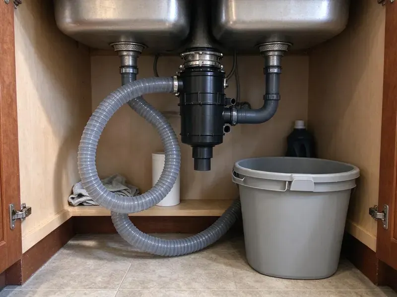

Kitchen Plumbing in Powell, WY
A kitchen sink that backs up into the other bowl usually means a clog past the trap. We clear it with a drain machine and show you what came out in Powell, WY.
- Insured, Licensed Crews
- Clean Work Area After
- Sinks, Faucets and Disposals
- Guaranteed Labor
Leak Under the Sink in Powell, WY? Get It Fixed
Tell us what the sink is doing and we will give you a price before we start.
Kitchen Plumbing Throughout Powell, WY
JKV Plumbing handles stubborn clogs, failing disposals and full sink replacements in Powell. We pull the trap and look before we quote. Hard, mineral-heavy water is common across Wyoming, and scale builds up fast in water heaters, faucets and appliances. Older homes can add to that wear, so the shutoff valves, supply lines and drain arm get checked while we are in the cabinet.
Work we handle every week:
- InSinkErator, Waste King and Moen disposal service
- Angle stops, air gaps and high loops
- Commercial grease traps and interceptors

Additional Kitchen Plumbing Services in Powell, WY
Our kitchen plumbing services in Powell, WY cover sinks, disposals, dishwashers, and grease traps so your kitchen stays clean, safe, and fully functional.


Customers
Why Choose JKV Plumbing for Kitchen Plumbing in Powell, WY?
Plumbers who work Powell every week know which neighborhoods have galvanized drains and which have PVC. That changes the repair. Galvanized lines rust shut from the inside over the years and usually need a short section replaced rather than just cleared.
- Licensed Plumbers, Every tech is licensed and insured, and trained on current disposal and faucet models.
- Stocked Trucks, Disposals, traps, valves and supply lines ride on every truck.
- Price Before Work, You get a flat price before the work begins, and it does not change when a job takes longer.
Citywide Coverage
Every part of Powell is on our weekly route. We get there fast. Since we are usually in the area already, a leaking kitchen sink can often be squeezed in between other jobs.
Experienced Team
Our crew also works in commercial kitchens on three-compartment sinks, floor sinks, hand sinks and grease interceptors. Commercial jobs run on a clock. That background helps restaurant owners pass inspections, since our plumbers know what the inspector looks for on a trap and a floor sink.
Safety-First Approach
First, we kill the power. On any disposal job our plumbers turn off the breaker or unplug the unit before reaching anywhere near the hopper, and every connection under the sink is made to the local Wyoming plumbing code.
Trusted Certified Powell Plumbing Services Professionals
At JKV Plumbing, we take pride in licensed, certified plumbing services throughout Powell, WY. Those papers on the wall mean something. Our plumbers hold recognized industry credentials, and they follow strict safety and quality rules on every repair, installation and maintenance call we run.
Call Us Now PHCC Plumbing Contractor Recognition
PHCC Plumbing Contractor Recognition Better Business Bureau (BBB) Accreditation
Better Business Bureau (BBB) Accreditation Angi Certified Pro
Angi Certified Pro ISO 9001 Quality Management Certification
ISO 9001 Quality Management CertificationSinks, Disposals and Drains in Powell, WY: The Details
Grease Trap Cleaning in Powell
A grease trap that smells sour is usually past due for cleaning. We remove the lid, scrape the baffles, pull the floating grease and settled solids, and check the gasket so the lid seals again instead of venting into the kitchen. We log every visit. Inspectors usually want to see that log before anything else.

Burst Supply Lines in Powell, WY
Supply lines with plastic coupling nuts split more often than braided stainless, especially after years of pressure swings. A failed line under the sink can put gallons per minute into the cabinet and the floor below before anyone notices it. Both supply lines get replaced. If one line cracked from age, the other one is about the same age.
Grease Trap Installation in Powell, WY
Under-sink grease traps work for small kitchens, while full restaurants often need an in-ground interceptor sized to the local sewer authority's rules. The local rule gets checked before we price it. Sizing is based on fixture flow, and an undersized trap fills fast and lets grease pass straight into the sewer line.
Disposal Replacement in Powell, WY
Disposals last about eight to twelve years. When the housing starts weeping from the bottom, it is done. We drop the old unit, check the mounting ring, install the new one and reconnect the dishwasher hose with a new clamp so it does not leak at the inlet. We haul the old one away.
Hard Water and the Kitchen in Powell, WY
Hard, mineral-heavy water is common across Wyoming, and scale builds up quickly in water heaters, faucets and appliances. Scale shows up first on the aerator. When kitchen faucet pressure drops slowly over a few months, the aerator screen or cartridge is usually full of scale, and we clean or replace both. We can also test your water hardness and price a softener or an under-sink filter.
Kitchen Faucet Repair and Replacement in Powell
Most single-handle kitchen faucets drip because of a worn cartridge, and Moen, Delta and Kohler all sell the part by model. We bring common cartridges. If the faucet body is corroded or the spray hose leaks inside the cabinet, replacing the whole faucet often costs about the same as chasing parts.
InSinkErator Models We Service in Powell
Badger units are the basic line, with a single grind stage and a 1/3 to 3/4 horsepower motor. Evolution models add grind stages and sound insulation, which you notice in an open floor plan, and some carry longer in-home warranties than the basic line does. We stock the common sizes. Older InSinkErator units with a good motor can usually be repaired.

Kitchen Drain Clog Removal in Powell, WY
Water rising in the second bowl when the first drains tells us the clog is past the trap, in the branch line behind the cabinet. We run a 1/4 or 3/8 inch cable from the cleanout or the trap arm, then jet the line if the cable comes back coated in grease. Chemical cleaners rarely touch grease. They sit in the trap and soften PVC glue joints over time.
Kitchen Plumber Near Me in Powell, WY
Being close means a short drive for emergencies and routine calls alike around Powell. Most visits start with a phone call. A few quick questions about the sink, the disposal age and the dishwasher let us send a plumber who arrives ready.
A nearby plumber knows the local pipe. In older Powell, WY homes galvanized drains are common, while newer houses use PVC, and that changes how we clear a clog and what we replace. We tell you which you have before quoting, so the price matches the pipe you actually have behind the wall.
JKV Plumbing at a Glance
- Licensed and insured plumbers serving Powell, WY
- 24/7 emergency service with same-day scheduling
- Upfront, flat-rate pricing before work begins
- 4.9-star rated by 782+ Wyoming customers
Powell Map
Powell Information
- Population
- 6,488
- Area codes
- Local
- Service area
- Powell and towns within a 40 mile drive
- Nearby
- Cody, Sheridan, Riverton, Lander
Grease, coffee grounds and aging cast iron or galvanized drain line are what slow most kitchen sinks down in Powell, WY, and a cleared trap and branch line fixes most of it.
Expert Services
Reach out to JKV Plumbing for reliable plumbing work done by licensed pros in Powell, WY.
Our Specialized Plumbing Services in Powell, WY
At JKV Plumbing, we handle the full list of plumbing services across Powell, WY. We go from leak detection all the way to full system installations, for homes and commercial buildings, and we do it quickly at a fair price. Take a look at our core services below:


What Happens After You Call About Kitchen Plumbing in Powell, WY
Here is how we get your kitchen working again.
Tell Us the Problem
Call (307) 393-4049 and describe what you see under the sink. A few questions up front let us load the right parts.
On-Site Look
Your plumber tests the disposal or opens the trap at your Powell home, explains what failed, and gives a written price.
Fix It Right
With your go-ahead, the plumber fixes it and tests it the way you will use it, then cleans up the cabinet.
Frequently Asked Questions About Kitchen Plumbing in Powell
Trap and supply line fixes are usually $125 to $300. Disposal installs run $250 to $650 with the unit, kitchen sink installs $350 to $900, and commercial grease trap installs often start near $1,500. The price is set up front.
Most commercial kitchens clean every one to three months, though a busy fryer kitchen may need it every few weeks. Most houses do not have one. The common guideline is to clean before the grease and solids fill about a quarter of the trap's depth, and your local sewer district may set its own schedule.
Nearly all food service businesses must have one under local pretreatment rules. We size the trap or interceptor by your fixture flow and the local district's rules, then install it.
Most restaurants need it every one to three months, depending on menu, volume and local rules. Heavy frying means more frequent service. Homes with a residential grease trap can usually get by with a yearly inspection and cleaning, unless the household cooks with a lot of oil.
Humming without grinding, water under the sink, a bad smell that cleaning does not fix, frequent clogs or total silence when you flip the switch. Press the reset button first. It is the small red button on the bottom of the unit, and if it pops back out right away the motor may be overloaded or failing.
Tightening a slip nut is fine. The wiring is where it gets risky. Poorly sealed strainers and flanges can drip into the cabinet for months unnoticed, and the particleboard base swells and falls apart.
Yes. We guarantee our labor, and fixtures and disposals carry manufacturer warranties, often between three and ten years.
For faucet or disposal swaps, normally no. Moving a sink, adding a drain line or major repiping usually requires a permit and an inspection through the Powell building department. We file it when it is required.
What People Are Saying About Our Plumbing Experts?

Angela D.
Our sump pump quit during a storm and the water was an inch from the basement carpet. JKV Plumbing put in a new pump with a battery backup that same evening. We have had two heavy rains since. It kicked on both times.
Sump Pump · Powell, WY
Tyler J.
We bought a taller comfort height toilet for my dad, who just had knee surgery. The plumber pulled the old one, found the flange was cracked, and replaced it before setting the new bowl. Took about two hours.
Toilet Installation · Jackson, WY
Monica A.
Our water bill nearly doubled in one month with no change in how we used water. The tech checked the meter, heard the leak under the hallway with his equipment, and opened a hole about a foot square. Fixed the same day.
Slab Leak Repair · Riverton, WY
Robert G.
The camera showed a full break in our clay sewer line near the street. JKV Plumbing replaced it with a trenchless pipe burst, so the only digging was two small pits in the yard. They let us watch the footage before and after.
Sewer Line Replacement · Cody, WYJessica T.
We were adding a gas range in a kitchen remodel and needed a new line run from the meter. The plumber pulled the permit, ran the pipe through the crawl space, and had it inspected and approved within the week.
Gas Line Repair · Sheridan, WY
Lisa C.
Water was pouring out from under the washing machine on a holiday weekend. JKV Plumbing talked me through closing the valves over the phone and had a plumber at the house within ninety minutes. It was a burst fill hose.
Emergency Plumbing · Gillette, WY